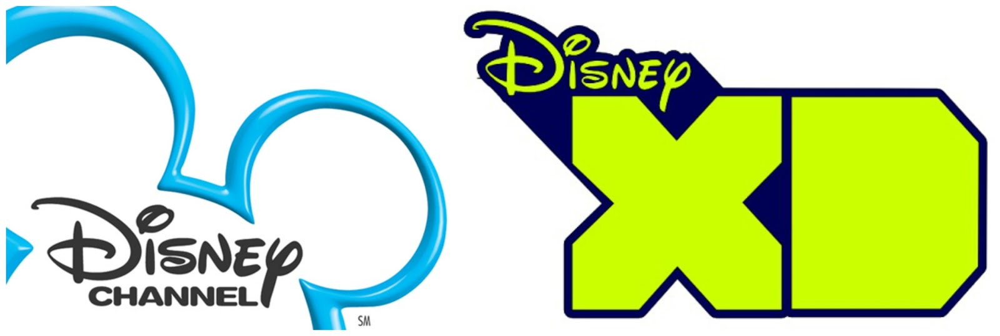
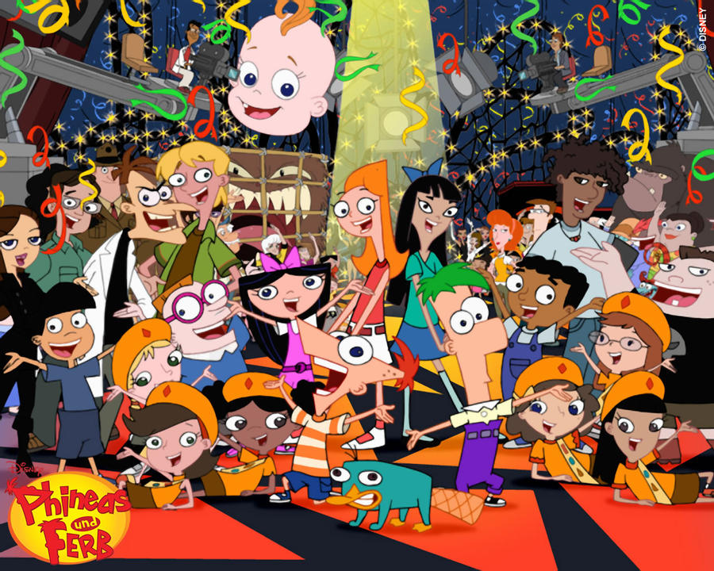
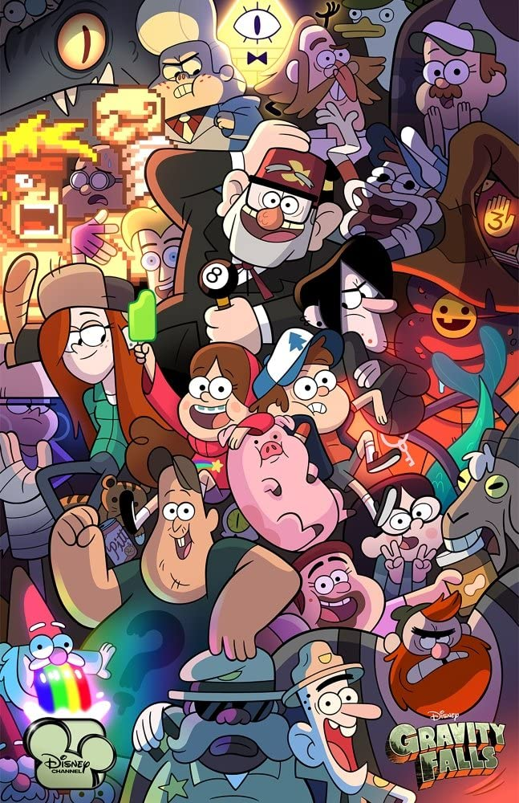
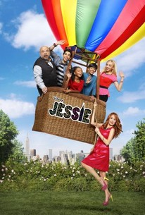
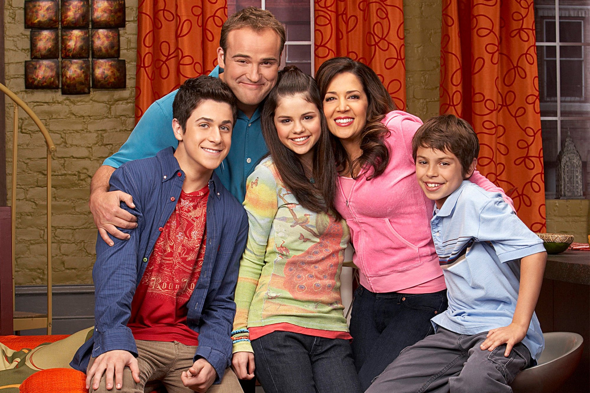

Welcome to our Disney Show Trivia!

Made by: Jocelyn, Samantha, Kylie and Ana :D
Can you remember your childhood favorites? No? Well me either but oh well that's a shame am I right, anyways welcome! take this quiz and see what you do remember from the mid 2000's! These shows were very popular and iconic to our generation so there is no doubt that you have not seen any of these, (if you haven't, you had no childhood) We have iconic brothers Phineas and Ferb wonder how they're doing with quarentine?), AND wonder twins Dipper and Mabel Pines (they had the childhod we wanted over at good old town, Gravity falls) AND texas white girl nanny, Jessie, with 4 kids to take care of because she can't pursue her career as an actress, (ironic huh) AND last but not least we have the wiazrd family, Alex Russo and her family are no normal family (because eveything is not what it seems) pick a show any show!, test your trivia!
Phineas and Ferb!

Gravity Falls

Jessie

Wizards of Waverly Place
